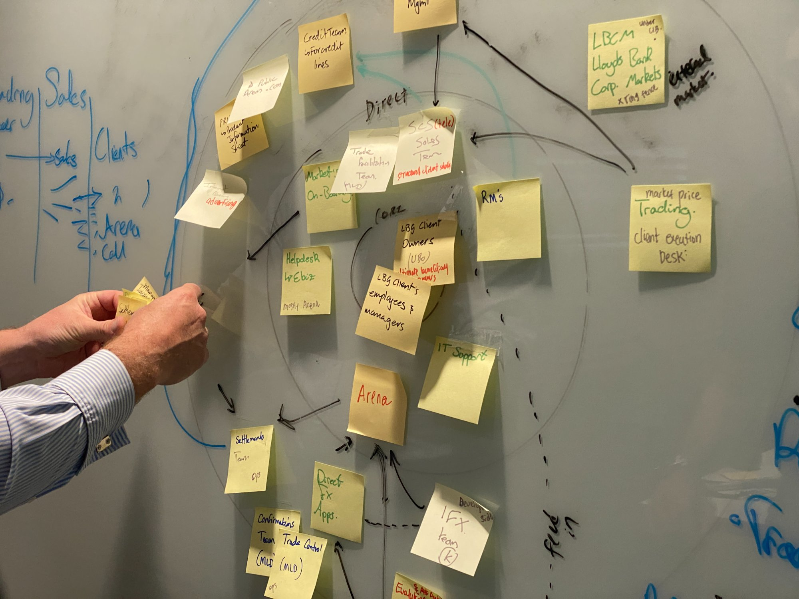
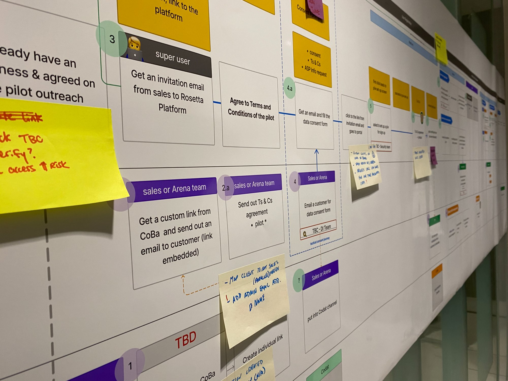
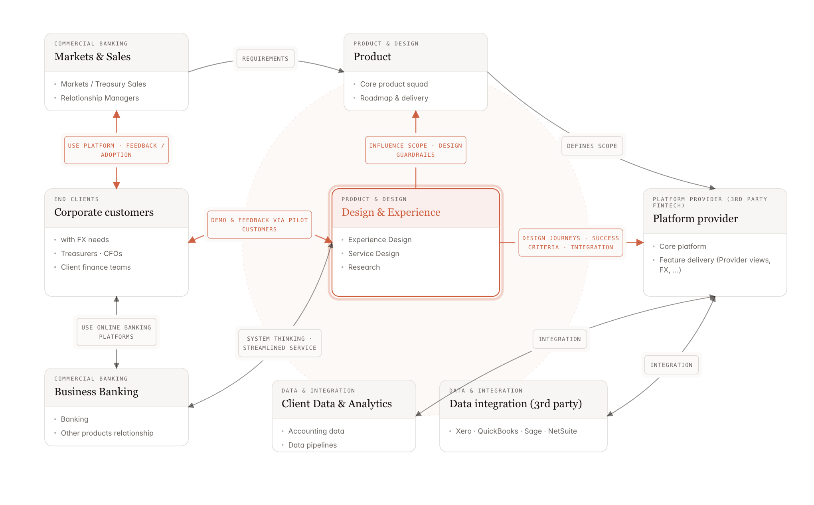
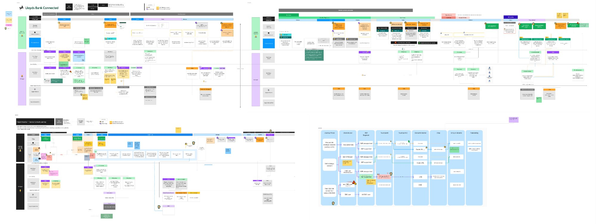
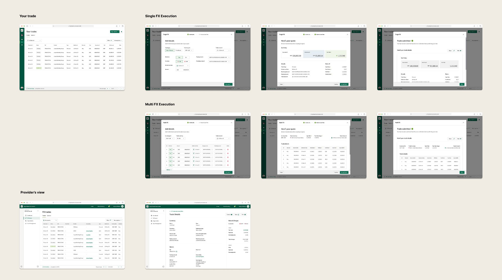
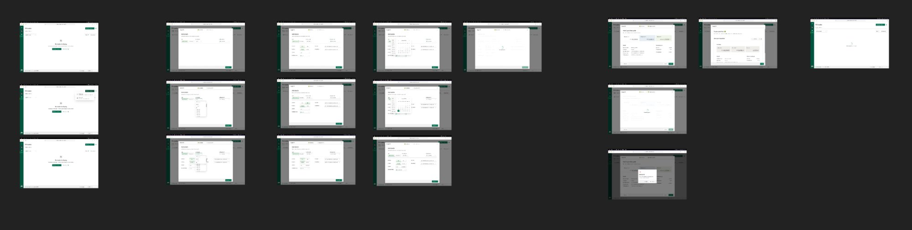
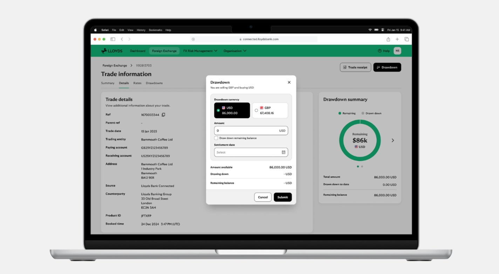

A platform designed for scaling businesses to transform accounting data into actionable insight—enabling smarter FX decisions, clearer risk management, and confident cash flow control.
2023–2024
Client
Lloyds Banking Group
Role
Service Designer
Collaboration
Commercial Banking, Markets, Client Data & Analytics
I served as the central experience design orchestrator across a complex, multi-team delivery environment—governing quality, aligning third-party design delivery, facilitating sign-off, managing end-to-end journeys, and enabling stakeholder feedback across Commercial Banking, Markets, Client Data & Analytics, and a third-party partner (CoBa).
This wasn't a traditional product design role. It required designing the operating model itself: how teams would collaborate, how quality would be maintained, and how client value would be measured beyond just feature launches.

Stakeholder ecosystem mapping workshop — identifying all actors across Commercial Banking, Markets, and Partnerships to establish the operating model.
The problem
Commercial Banking clients were executing 63% of their FX transactions with competitors—revealing major leakage and unmet needs in Lloyds' FX experience. Clients wanted a simple, digital way to view exposures, ingest accounting data, and hedge FX risk without relying on telephony.
63%
of FX transactions executed with competitors
Experience goals (based on user research)
💡
Create a simple, intuitive digital platform for FX exposure visibility and decision making
📊
Enable SME clients to self-manage FX exposure more frequently based on live data insights
⚡
Enable colleagues to spend less time on simple FX queries and more time supporting strategic decisions
The challenge
Delivering a third-party FX platform within Lloyds' Experience Standards required more than integration—it demanded alignment across brand, accessibility, and contractual touchpoints.
We needed to ensure the partner experience felt seamless and native to Lloyds, while identifying and removing friction across the most critical journeys: onboarding, data integration, user management, and FX booking flows.
Key delivery challenges
Fragmented delivery environment: Multiple teams operating on different timelines, with critical roles like solution architect and E2E testing manager initially missing—creating ambiguity and slowing alignment.
Complex data ingestion journeys: Data flows between CD&A, Markets, and the third-party platform needed mapping, risk assessment, and translation into implementable UX.
Third-party experience quality: Ensuring the partner's delivery met Lloyds' brand guidelines, accessibility standards, and experience quality expectations.
End-to-end journey friction: The overall service journey had numerous handoffs across onboarding, consent, data integration, FX booking, and user management.
Experience debt: No established measurement framework meant the business was absorbing friction through front-line telephone and email — effective, but unsustainable. The goal was to reduce that load while preserving the human rapport.

As-is service journey mapping — documenting existing onboarding, consent, and FX booking flows across all touchpoints to surface friction points before redesign.

Stakeholder ecosystem and design responsibility — illustrating the complexity of cross-team alignment required across the third-party integration, internal working groups, and design ownership.
My approach
I tackled these challenges through a combination of strategic orchestration, hands-on journey design, and operational rigor.
Established the experience operating model
Introduced a design-led operating model with weekly design governance, structured feedback loops, and a shared view of dependencies across teams. This created the alignment infrastructure that was previously missing.
Mapped complex data flows into sharable artefacts
Worked directly with Client Data & Analytics and Markets to map data flows, risks, and gaps—then translated these into service flows and UX artefacts that non-technical stakeholders could understand and act on.

End-to-end service journey map — charting client and colleague flows across onboarding, data integration, FX booking, and user management, shared across four workstreams.
Governed third-party design quality
Ran weekly design reviews with the third-party partner, providing actionable feedback against Lloyds' brand guidelines and UX quality standards before each release. This wasn't gatekeeping—it was coaching the partner team toward native-feeling experiences.
Identified and prioritised journey friction
Conducted end-to-end journey assessments across onboarding, data integration, consent, FX booking, and user management. Documented friction points and fed improvement opportunities directly into product and engineering backlogs.
Reframed success measurement
Applied internal Design Excellence assessments and DAC accessibility reviews to establish a shared understanding of experience success—shifting the conversation from "did we launch?" to "did we create client value?"

Early wireframe explorations — iterative screen designs for the FX booking flows, tested with clients before partner handoff for build.

Single & Multi FX execution flows — final screen sequences covering trade entry, quote review, and confirmation for both individual and bulk FX transactions.
My impact
Key contributions
✓ Established the experience operating model between Lloyds Banking Group and third-party partner (CoBa)
✓ Defined end-to-end client and colleague journeys, shared across workstreams to support alignment and delivery
✓ Ran weekly design governance sessions, identifying risks and driving continuous journey improvements
✓ Established success-measurement approach using Design Excellence assessments and DAC accessibility reviews
This project demonstrated that great service design isn't just about crafting individual touchpoints—it's about designing the collaboration model, quality standards, and measurement frameworks that enable teams to deliver coherent, valuable experiences at scale.

The delivered platform — FX Risk Management dashboard showing trade information, drawdown flow, and live rate monitoring across desktop and mobile. Live on Lloyds Bank Connected.
"The hardest design challenge wasn't the platform itself—it was designing how distributed teams would collaborate to deliver it."
What I learned
Service design at enterprise scale requires equal parts craft and orchestration. The most valuable design contribution wasn't a specific screen or flow—it was establishing the operating rhythm that allowed multiple teams to stay aligned, maintain quality, and measure what actually mattered.
What I'd do differently
Stay focused within your area of speciality to keep delivery productive and efficient — but invest early in finding the right rhythm for cross-stakeholder alignment.
Regular check-ins with large stakeholder groups aren't overhead; they're the mechanism that prevents misalignment from compounding. The earlier you establish how the group will stay in sync, the less time you spend course-correcting later.
Next Project
Future Experience Vision for Banking
Designing AI-enabled future experience for 2030—speculative design and strategic storytelling.